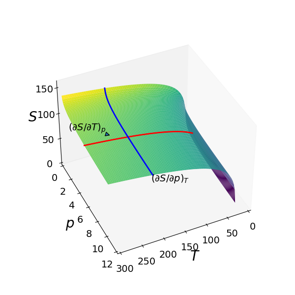
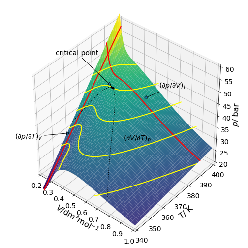
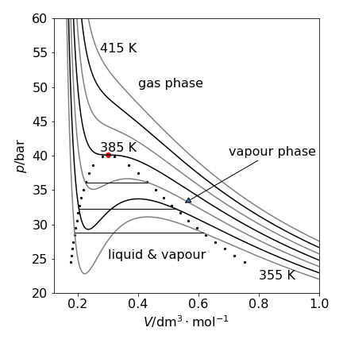
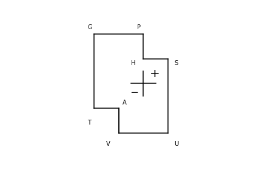

11 Partial differentiation
Contents
11 Partial differentiation#
# import all python add-ons etc that will be needed later on
%matplotlib inline
import numpy as np
import matplotlib.pyplot as plt
from sympy import *
init_printing() # allows printing of SymPy results in typeset maths format
plt.rcParams.update({'font.size': 14}) # set font size for plots
11.1 Differentiating equations in more than one variable#
When an equation depends on more than one variable, \(x\) and \(y\) perhaps, then it is possible to differentiate with respect to either \(x\) or \(y\) while keeping the other constant. The normal rules of differentiation apply; the only change is that the notation is a little different with a curly \(\partial\) being used instead of a Roman \(d\) and a subscript is used to indicate which variable is held constant. If the function will allow it, second and third partial derivatives can be calculated.
Suppose that \(z = x^2y + y^3(x + 1)\), then the \(x\) and \(y\) partial derivatives are
The second partial derivatives are \(\displaystyle \left(\frac{\partial^2 y}{\partial x^2} \right)_y=2y,\quad \left(\frac{\partial^2 y}{\partial y^2} \right)_x =6y(x+1)\).
As a second example \((\partial y/\partial x)_z\) is calculated where \((y + 1/z^2)(z - 1) = 3x\). Since it is indicated by the subscript that \(z\) is a constant, differentiating gives \(\displaystyle (z-1)\left(\frac{\partial y}{\partial x} \right)_z=3\).
(i) Ideal gas#
Differentiating the pressure in the ideal gas law \(p = nRT/V\) to obtain the rate of change with respect to temperature is expressed as \((\partial p/\partial T)_{n,V}\) if the number of moles, \(n\), and volume are held constant. The result is
Similarly at constant \(n\) and \(T\),
and constant \(V\) and \(T\) gives
Calculating second derivatives has the same notation but, in this example, only
is not zero. The other two derivatives are constants, \(\displaystyle \left( \frac{\partial}{\partial T}\left(\frac{\partial}{\partial T} \frac{nR}{V} \right) \right)_{n,V} = \left( \frac{\partial^2 p}{\partial V^2} \right)_{n,V} = 0 \).
(ii) van der Waals gas#
The van der Waals equation which, although empirical, describes real gases more accurately than does the ideal gas law. The equation is
where \(a\) is related to intermolecular interaction and \(b\) describes the finite volume of a molecule. We shall find \((\partial p/\partial T)_V\). Differentiating with respect to \(T\), and using the usual rules of differentiation with \(V\) as a constant gives,
Now find \((\partial p/\partial V)_T\). Differentiating with respect to \(V\) at constant \(T\) is easier if the equation is expanded first as \(\displaystyle p(V-b)=-\frac{a}{V}+\frac{ab}{V^2}+RT\), then differentiating as a product produces,
11.2 Geometrical interpretation of partial derivatives#
If a function can be differentiated with respect to either of two variables, \(x\) and \(y\), then it represents a surface. The derivatives then represent the slope of the surface at any point but in a direction at a fixed \(x\) or \(y\) depending on which is held constant.
The Sackur - Tetrode equation for the translational entropy \(S\) of a perfect gas is
where \(C_p\) is the heat capacity at constant pressure \(p\), \(S_0\) is a constant entropy, \(n\) is the number of moles of the gas and \(R\) the gas constant. The entropy vs temperature and pressure is shown as the surface in Fig. 33. Two partial derivatives are also shown, one at fixed \(p\) parallel to the \(T\) axis and one at fixed \(T\), parallel to the \(p\) axis. These lines are parallel to the axes because there is no term in both \(p\) and \(T\) in the partial derivative equations and the partial derivative is the gradient of the lines shown at any point.

Figure 33. Three-dimensional plot of the Sackur - Tetrode equation for one mole of an ideal monatomic gas where \(C_p = 5R/2\), with pressure in bar and \(T\) in kelvin. The blue and red lines show how the partial derivatives vary with pressure or temperature when the other variable is held constant. The value of the partial derivative is the slope at any point.
The liquefaction of gases was studied by Andrews before 1870 and he discovered the critical point using carbon dioxide. This gas was presumably used as it would be readily available from brewing. The van der Waals equation is nowadays commonly used to study non-ideal, i.e. real, gases. The equation is
where \(a\) is a measure of the attractive forces between molecules and \(b\) accounts for their finite size. \(V\) is here the molar volume, which is volume divided by number of moles; this is often represented by \(\bar V\) or \(V_m\). Fig. 34 shows the \(pVT\) surface and shows gradients at three points with different variables held constant. The partial derivatives are also shown as lines, again note that the partial derivative is the slope at any point.
The contour lines follow constant pressure where \((\partial V/\partial T)_p\) = constant. Fig. 35, shows the \(pV\) or isotherm plot, for Freon with the inflexion at the critical temperature of 385 K (black dot) is where the gradients, \(\partial p/\partial V = \partial^2 p/\partial V^2\) = 0. The data used to make the plot is that for freon, \(\mathrm{CCl_2F_2}\), with \(a = 10.78\,\mathrm{ bar\, dm^6 mol^{-2}}\) and \(b = 0.0998\,\mathrm{ dm^3 mol^{-1}}\) and \(R = 0.083145\,\mathrm{ bar\,dm^3\,mol^{-1}K^{-1}}\). The critical point values are \(T_c = 8a/(27bR)\);\( p_c = a/(27b^2),\; V_c = 3b\).

Figure 34. \(PVT\) profile for a van der Waals gas. This figure and the next are calculated using data for freon, \(\mathrm{CCl_2F_2}\). The critical temperature is \(385\) K where there is an inflexion point.

Figure 35. \(PV\) plot at different temperatures separated by \(10\) K. The parameters for freon, were used. The oscillating lines for pressures at temperatures lower than the critical point and inside the region bounded by the dotted line are not physically realistic. The straight solid lines show the path taken by the fluid in changing from a liquid to vapour. The curves on this graph have a gradient \((\partial p/\partial V )_T\).
The van der Waals equation provides a surprisingly good description of a real gas, considering that it has only two adjustable parameters, but does not reproduce the experimental data exactly. This is particularly true for the oscillatory nature of the curve below the critical point (385 K for freon), which is not seen experimentally. A horizontal tie line is drawn so that there is an equal area above and below the line (Maxwell equal area construction) and this is the path followed by the fluid. Three such lines are shown on the graph where the fluid has the same pressure and the phase change proceeds imperceptibly along this line from liquid to gas or vice versa. At a given temperature, horizontal pairs of points on the dotted line define the points where the pressure of the liquid and vapour are the same and where the area of the oscillating curve is the same above and below the straight line.
The volume at each end of the tie line has to be found numerically by equating the pressure at either end \(p_{V_1} -p_{V_2}=0\) and making the areas mentioned equal to zero, which is the integral
The volumes \(V_1\) and \(V_2\) are found by solving these two equations simultaneously at each temperature. The integral for volume \(V\) is \(RT\ln(V-b) + a/V\). The dotted lines in fig 34 and 35 show the positions of the tie lines for a range of temperatures up to the critical point. The next short piece of code will calculate the volumes.
# (nsolve is part of the sympy library)
a = 10.78 # bar . (dm^3/mol)^2
b = 0.0998 # dm^3/mol
R = 0.083145 # dm^3.bar.mol/k; 1 dm^3.bar == 100 joules
p = lambda V,T : R*T/(V-b) - a/V**2 # bar, van der waals equation; V in dm^3/mol
integrl = lambda V,T: R*T*ln(V-b) + a/V # dm^3.bar integral pdV
print('{:s}'.format( 'Temp V1 V2 dm^3/mol'))
v1,v2 = symbols('v1 v2') # use sympy and nsolve, not fast but ok. define v1 and v2
for T0 in range(360,370,2): # choose some temperatures
eqn1 = integrl(v2,T0)- integrl(v1,T0) - p(v2,T0)*(v2-v1)
eqn2 = p(v2,T0) - p(v1,T0)
ans = nsolve(( eqn1,eqn2 ), (v1,v2), (0.15,0.8), verify=False ) # 0.15 and 0.8 are approx limits.
print('{:d} {:f} {:f} '.format(T0, float(ans[0]), float(ans[1]) ) )
pass
Temp V1 V2 dm^3/mol
360 0.196093 0.568952
362 0.198959 0.550496
364 0.202042 0.532266
366 0.205378 0.514211
368 0.209012 0.496269
11.3 Mixed derivatives#
The new feature of partial differentiation is that it is possible to differentiate with one variable then do so again with another.
Using the first example, where \(z = x^2y + y^3(x + 1)\), and differentiating \((\partial z/\partial x)_y = 2xy + y^3\) with \(y\) produces
Next differentiating \((\partial z/\partial y)_x = x^2 + 3y^2(x + 1)\) with \(x\) produces \(\displaystyle \frac{\partial^2 z}{\partial x\partial y} = 2x + 3y^2\) which is the same result. The order of carrying out the differentiation is immaterial, and there is a mathematical theorem that guarantees this. In general for any well behaved function \(f (x, y)\),
This is also sometimes written in a more formal form. The left side of the equation tells us to differentiate with \(y\) keeping \(x\) constant, and then differentiate the result with \(x\), keeping \(y\) constant,
This is also frequently written as \(\displaystyle \frac{\partial}{\partial x}\left(\frac{\partial f}{\partial y} \right)= \frac{\partial}{\partial y}\left(\frac{\partial f}{\partial x} \right) \) where the subscripts are assumed.
In the ideal gas law, \(pV = nRT\), differentiating \(p\) with respect to \(T\) at constant \(V\) and \(n\) (number of moles) produces
Next, differentiating with respect to \(V\) also at constant \(n\) produces.
Repeating the process but in the opposite order gives \(\displaystyle \left( \frac{\partial^2 p}{\partial T\partial V} \right)_{n}=-\frac{nR}{V^2}\).
11.4 Chain rule#
The chain rule can also be used with partial derivatives. If \(w\) is some complicated expression in \(x,\; y\) and \(z\) the familiar function-of-function rule can be used to calculate for example, \((\partial y/\partial x)_z\) with \(z\) held constant. The result is
Notice the symmetry in the derivatives. A similar equation can be written with \(x\) held constant if the differentiation were with respect to \(z\). Using this rule, if \(\displaystyle y = \sin(azx^2 + z^2)\) then
where \(\displaystyle \left( \frac{\partial y}{\partial w} \right)_z = \cos(azx^2+z^2)\). The other derivative is
11.5 Use in Thermodynamics ( see also section 11.8 )#
In thermodynamics, the chain rule is very often used to expand an expression in a new variable \(w\) and this proves to be very useful. The reason for doing this is to change an unfamiliar derivative into two expressions each of which is related to something that can be measured.
For example, suppose that the change in enthalpy with temperature at constant pressure is required this is \((\partial H/\partial T)_p\), and is the constant pressure heat capacity \(C_p\), but, for the moment, assume that we do not know this. To find out what this derivative is, expand it in some other thermodynamic variable, entropy for example, then
Notice again the ‘symmetry’ of the derivatives when making such an expansion. This procedure does not seem to make much sense until the following derivatives are looked up
making \(\displaystyle \left( \frac{\partial H}{\partial T} \right)_p=C_p\) the heat capacity at constant pressure. Had we chosen some other variable instead of \(S\), \(G\) or \(U\) for example, then although derivatives could be found these may not correspond to anything that could be measured.
If the second derivatives (above) can be integrated and is used to experimentally determine entropy:
at constant pressure, by measuring the heat capacity vs. temperature.
11.6 Reciprocal derivatives#
Reciprocal derivatives follow the same rules as for normal differentiation: take the reciprocal and flip the derivative, with a function \(y\) in \(x\) and \(z\)
For example if \(y = azx^2 + z^2\) then differentiating with respect to \(x\) produces \(\displaystyle \left( \frac{\partial y}{\partial x}\right)_z = 2azx\) and differentiating with \(y\) produces \(\displaystyle 1=2azx\left(\frac{\partial x}{\partial y} \right)_z\) which proves (40).
11.7 Total derivatives#
Total derivatives are probably used in thermodynamics more than elsewhere. It is common to see expressions such as
The notation here is different to that used so far because \(dp,\; dT\), and \(dV\) exist as entities in themselves, rather than as a ratio, such as \(dp/dV\).
In thermodynamics, one needs to know which variable depends upon another because this is rarely stated in the equations. An example is \(p \equiv p(T, V)\) where pressure depends on \(T\) and \(V\), and therefore temperature depends on \(p\) and \(V\) and \(V\) depends on \(T\) and \(p\); \(V \equiv V(T, p)\). By definition, the internal energy of an ideal gas \(U\), depends only on temperature \(U \equiv U(T)\) because there are no interactions between molecules.
For example, does the entropy \(S\) depend either on \(p\) and \(V\), or \(H\) and \(G\), or on other quantities? Not apparently an easy question to answer, and in fact any one thermodynamic quantity can depend upon any of the others, but is defined when it is a parameter of any other two; which two depends upon what problem you are trying to solve. There is almost too much choice and this can lead to confusion even though there are natural variables for each quantity and these are are generally used.
A total differential can be derived in the same manner as was originally done for a simple derivative, such as \(dy/dx\); we follow here McQuarrie & Simon (1997). Making a small change in pressure \(\Delta p\) caused by a small change in temperature and volume produces
and now subtract a small change in volume at temperature \(T\) from the first term of this equation and add the same to the second, so adding zero. The result is
Next, multiply both terms by unity, the first pair of terms with \(\Delta T/\Delta T\) and the second pair with \(\Delta V/\Delta V\) making
In the first square brackets only \(T\) changes; increasing to \(T + \Delta T\), the volume is unchanged at \(V + \Delta V\) and in the second term, only \(V\) changes. Now take the limits \(\Delta T \to\) 0 and \(\Delta V \to\) 0 to form the differential
and again notice the symmetry in the expression. This derivation is quite general: if a function \(f\) depends on variables \(g\) and \(h\), i.e. \(f(g, h)\), then it is always possible to write;
11.8 The ‘minus 1’ rule or Euler’s Chain Rule#
Euler’s chain rule is a product of three derivatives that is very useful in thermodynamics and elsewhere. The pressure of a gas can be written as a function of temperature and pressure, \(p = f(T,V)\). This can be expanded as a total derivative, equation (41), and if the pressure is kept constant \(dp = 0\) then
The two terms \(dT\) and \(dV\) can have any value but their ratio \(dV/dT\) is fixed when \(dp = 0\) and so when dividing by \(dT\) the notation should be changed to \((\partial V/\partial T)p\). Doing this produces
Because \(V\) is constant, by the ideal gas law, \(p\) is only a function of temperature. Therefore as
then
Notice the ‘symmetry’ in the expression; each derivative involves all three parameters in a cyclic fashion. This type of equation is quite general; if a function has the form \(f(x, y, z) = 0\) then
In thermodynamics a function such as \(f (p, V, T) = 0\) is usually called an equation of state; this means that
and the Euler ‘minus 1’ equation (44) can be obtained in a different way using this last equation. Suppose that there is no change in pressure, which is the case in an isobaric process, then
which is \(\displaystyle \left(\frac{\partial V }{\partial T}\right)_{p}=\left(\frac{\partial f }{\partial T}\right)_{p} / \left(\frac{\partial f }{\partial V}\right)_{p}\)
but this result is not very useful because it still contains the function \(f\). To remove this, the equation can be divided top and bottom by \(\partial p/\partial f\) which produces
which is equivalent to equation (44) but arrived at in a different way.
11.9 Partial Derivatives in Thermodynamics#
In the study of thermodynamics, partial, mixed, and total derivatives are commonly used; this adds to the complexity of the subject, particularly if these appear to be ‘pulled out of fresh air’. Understanding how these relationships are produced really helps in understanding thermodynamics as it removes the mathematical burden, allowing the subject itself to be better understood. To this end, the parameters used in chemistry are \(p,\; V,\; A,\; T,\; H,\; U, \;G,\; S\) and each one depends upon the others. Besides \(p,\; V,\; T\) and \(S\), the other parameters used are \(U\) the internal energy, \(H\) the enthalpy, \(G\) the Gibbs free energy and \(A\) the Helmholtz free energy.
When one quantity is to be determined, for instance the entropy \(S\), then it is defined provided it can be calculated as a function of any other two parameters. The two parameters chosen are normally determined by what can be measured experimentally; however, it can be shown that there are natural variables for each parameter; for the internal energy \(U\) these are volume \(V\) and entropy \(S\). The defining equations for \(H, \;U,\; G\), and \(A\) in terms of natural variables are shown in table 1. When constructing equations involving thermodynamic derivatives as a rule of thumb, \('x'\) values are usually \(T,\; V,\; p\), and \(S\) and \('y'\) values \(H,\; U,\; G,\; S\), and \(A\).
As an aide memoir, the diagram below the table can be used to remember these equations. It is first necessary to remember the phrase ‘Good Pupils Have Studied Under Very Able Teachers’ with the first letter being the thermodynamic quantity. The rule is that to calculate \(dG,\;dH,\;dU\) or \(dA\) move to the two closest symbols and add + before the symbol if the move is to the right or up and negative otherwise. The other symbols are added according to the normal pairs. An example makes this clearer. To calculate \(dA\) start with \(dA= -?dV -?dT\) then as variables are always in pairs \(p:V\), \(S:T\) etc., then \(dA=-pdV-SdT\)
Table 1 Thermodynamic relationships and natural variables in a closed system where no matter enters or leaves.

As an example of using Table 1 the partial derivatives with respect to entropy at constant pressure are calculated
and then derivatives with temperature
11.10 Exact and non-exact differentials and state functions. Pfaffians.#
In an adiabatic change, no heat enters or leaves the thermodynamic system. The first law therefore asserts that
Now, if \(U\equiv U(V,T)\) then
and combining this with the first law produces
This differential expression is in two variables and has the same form as the differential the mathematicians call a Pfaffian:
where \(A(x, y)\) and \(B(x, y)\) are two functions of \(x\) and \(y\). If the derivative of each of these two functions is now taken, but with respect to the other variable, only if \(\partial A/\partial y\) and \(\partial B/\partial x\) are then found to be equal is the differential said to be exact or perfect;
The importance of this condition is understood only when equation (47) is integrated to find \(Q\). If the differential is exact, then, provided \(Q\) exists,
and \(Q\) is said to be integrable. The result of integrating is just the difference in \(Q\) at value of \(2\) compared to that at \(1\) i.e. the integral does not depend upon the path taken from the start to the end but just the values of the function \(Q\) at the start and end.
In thermodynamics, any function with the same properties as \(Q\) is called a state function: enthalpy, entropy, temperature, and internal energy are examples of state functions. In contrast, heat and work, which depend on the path taken from start to end, are not state functions.
The internal energy of a molecule consists of energy in rotational and vibrational levels. It does not matter how the energy gets into these levels, i.e. on the path that is taken to reach a certain amount of internal energy. For example, in an experiment, we might use radiation of appropriate frequencies, to excite a certain number of rotational levels first then vibrational ones later or vice versa; the result is that the same amount of internal energy is contained within the molecule. However, the amount of work done to achieve this need not be the same. Another state function is gravitational potential energy, which is the energy gained on climbing a hill. You will have the same potential energy whether you run up, walk up, or parachute there from a plane, but the amount of work done and heat generated to get you there, will be very different in each case.
The equivalence between the derivatives in equation (48) may not be true in all cases and then the differential is not exact. The integration now depends upon the path taken from \(1 \to 2\) and the integration must be explicitly performed. Suppose that \(\theta\) is an expression that depends on \(x\) or \(y\), then it can be shown that the differential equation (47) can be made exact by dividing the expression by the factor \(Q\),
As an example, let us start with equation (46) or (47) and calculate (48) to see if the two derivatives are the same. If, in equation (46) we let
differentiating \(A\) with respect to \(T\) produces
and \(B\) with \(V\)
These two derivatives are clearly not the same; for example, in an ideal gas the derivative \(\partial p/\partial T \ne 0\) but it should be zero if equation (48) is to be obeyed.
Now do a similar calculation, but instead use equation (49), with \(\theta = T\) and calculate \(dQ/T\), which is the entropy \(S\). Because \(T\) depends upon \(P\) and \(V\), by equation (49) a perfect differential should result;
To check this, start with eqn. 48, calculate the derivatives again using the product rule with \(A\) the term preceding \(dV\) and B that preceding \(dT\) in the last equation. The result is
and
If the derivatives of \(A\) and \(B\) are equal, then with some rearranging the following relationship results
which must be true if we believe that the original differential is exact. To confirm that this is the case, consider an ideal gas where the internal energy depends only on the temperature, then \(dU/dV = 0\), and as \(pV = nRT\), then \(\displaystyle \left( \frac{\partial p}{\partial T}\right)_V=\frac{nR}{V}\). As a check, substituting into equation (50) gives \(\displaystyle 0=\frac{nRT}{V}-\frac{nRT}{V}\) which shows that equation (50) is correct and so is (49).